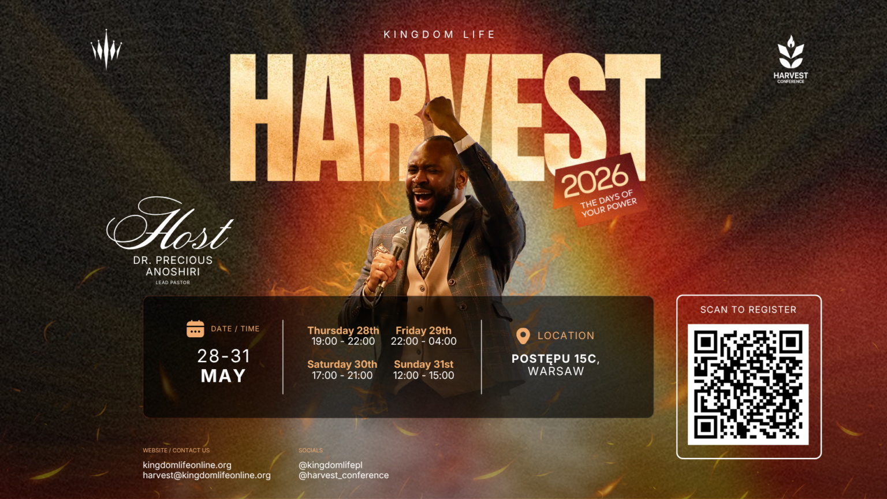
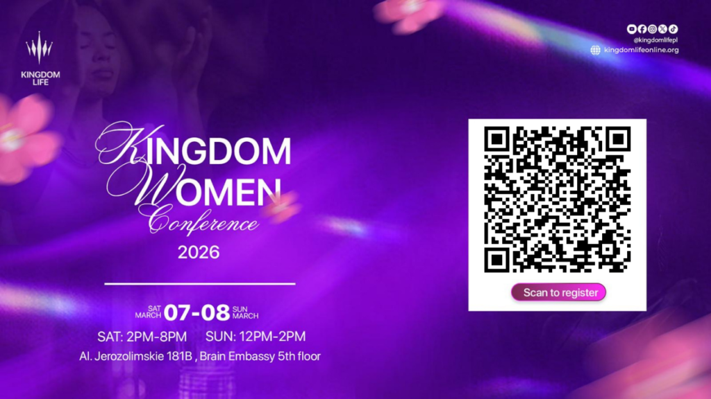
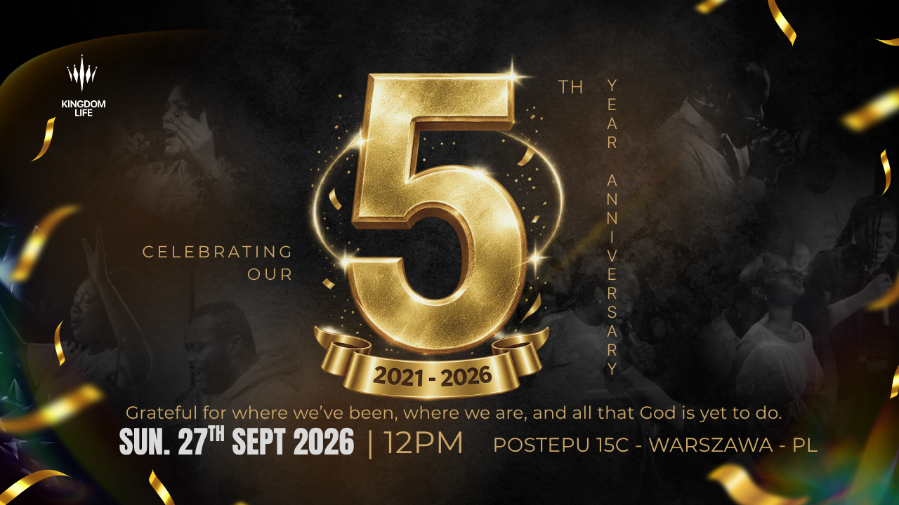
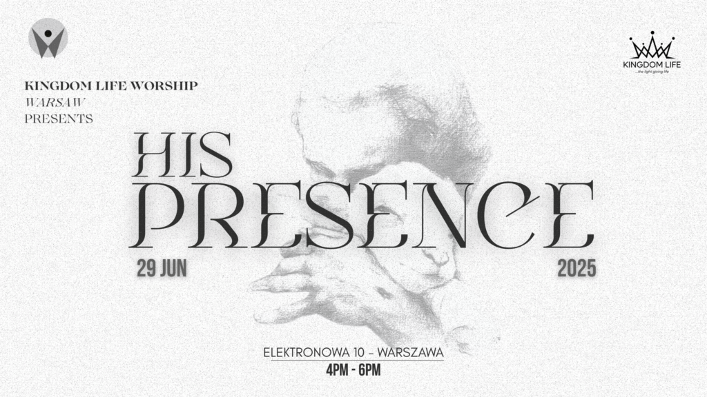
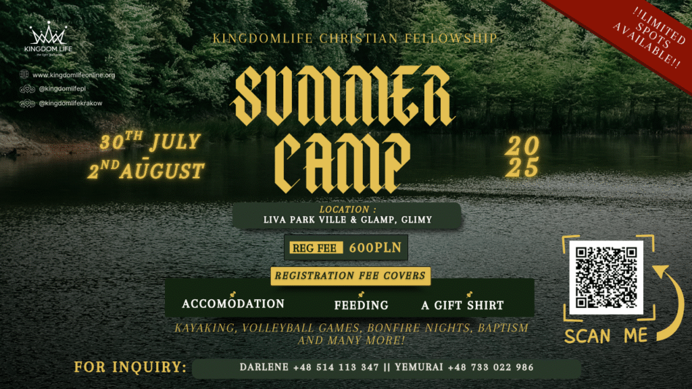
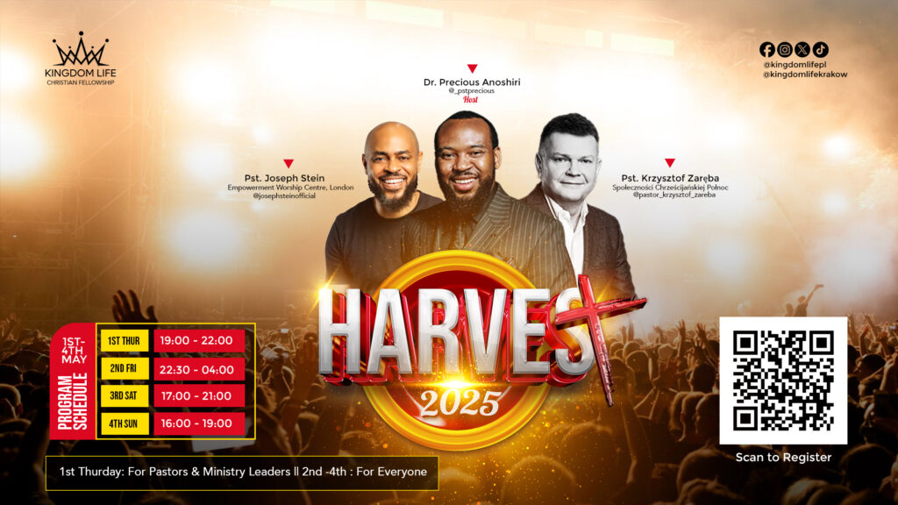

Harvest Conference 2026
28–31 May · Postępu 15C, Warsaw. Four days set apart to preach the gospel and stir faith. Host: Dr. Precious Anoshiri.
Programs, events, meetings
Besides Sunday and weekly prayer, Kingdom Life sets aside special days to meet with God and with one another. Kraków meetings are below. Family conferences are listed as they appear on the official events page.
On a small screen, slide the table sideways.
| Meeting | When | Where |
|---|---|---|
| Sunday worship English service: worship, teaching, fellowship |
Sunday 12:00–14:00 | Hotel Centrum, Osiedle Centrum E 12. Follow the banners inside. |
| Daily prayer The first hour is often personal prayer, then we pray together |
18:00, Sunday to Sunday | Ask the campus team for this week’s room. Write krakow@kingdomlifeonline.org. |
| Weekly prayer meetings | As announced each week | Listed on Instagram: @kingdomlifekrakow |
These posters are the church’s own event art from kingdomlifeonline.org.

28–31 May · Postępu 15C, Warsaw. Four days set apart to preach the gospel and stir faith. Host: Dr. Precious Anoshiri.

7–8 March · Saturday 14:00–20:00, Sunday 12:00–14:00 · Al. Jerozolimskie 181B, Brain Embassy, 5th floor, Warsaw. A space of restoration and hope.

A celebration of what the Lord has done and is yet to do. Come and praise God with the family.

A worship gathering to encounter God, be held in His glory, and be changed as we behold Him.

A summer gathering of the Kingdom Life family. Watch the social channels for the next camp dates.

A past harvest gathering, kept here so new friends can see the kind of meetings we hold.